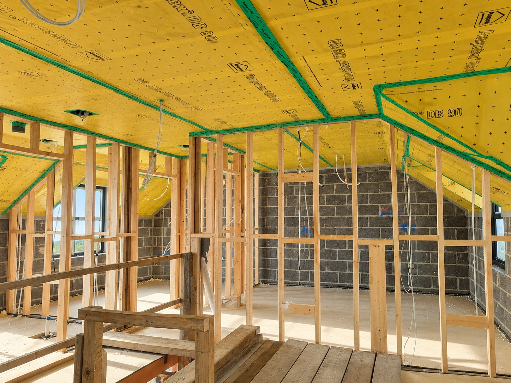
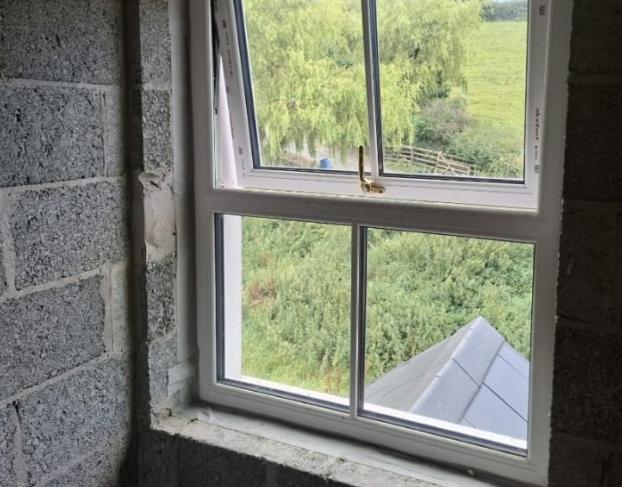

Reduced draughts
Helps control uncontrolled air movement through gaps and cracks.

Ecospec provides airtightness installation services for suitable homes and buildings, including airtight membranes, sealing around windows and doors, and detailed treatment of junctions and service penetrations.
Gaps and cracks in the building fabric can allow uncontrolled air movement, causing heat loss, cold draughts and uneven temperatures.
Airtightness work creates a continuous air-control layer around the heated part of the building. This layer must connect across walls, floors, ceilings, roofs, windows, doors and service openings.

Airtight membranes are fitted to the internal side of suitable walls, ceilings or roof structures to help control air movement through the building fabric.
The membrane must be installed continuously and connected to adjoining building elements. Overlaps, corners and edges are sealed using compatible tapes, adhesives and accessories.
Careful planning is required before internal finishes and services are installed, as unnecessary penetrations can damage the completed airtight layer.
Window and door openings are common locations for unwanted air leakage, particularly where the frame meets the surrounding wall.
Airtight tapes, membranes and sealants can be used to connect the internal edge of the window or door frame to the airtight layer of the wall.
The details must allow for the frame, wall construction, internal finish and expected movement while maintaining a continuous seal around the full opening.


Pipes, cables, ducts, joists and structural connections all pass through or meet the airtight layer and must be sealed carefully.
Proprietary collars, tapes, adhesives and flexible sealants are used where appropriate to maintain continuity around each detail.
Services should be planned before the airtight layer is closed so penetrations can be grouped, reduced and sealed correctly.
Airtightness depends on continuity. The work should be coordinated with insulation, windows, doors, services, plastering and internal finishes.
Arrange an AssessmentHelps control uncontrolled air movement through gaps and cracks.
Supports more consistent internal temperatures across the building.
Helps insulation work as intended by reducing air movement through it.
Helps control the movement of moisture-laden indoor air into the building fabric.
Tell us about the building, the stage of the project and the areas requiring attention. Our team can advise on membranes, windows, doors and detailed sealing.